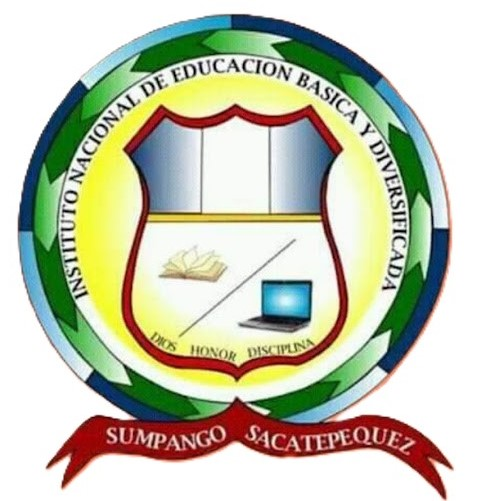

INEB-D "Sergio Leonel Celis Navas" Plan Diario Sumpango Sacatepequez
Servicios
Inicio
Servicios
Galeria
Contamos con:
Ciclo básico
Primero Básico
Requisitos para inscripcion
Certificado de Estudios de 6to. Primaria (original)
Diploma de Sexto Primaria (original)
Código personal del estudiante
1 Certificado de Renap original y 1 copia
Fotocopia de DPI de los encargados
Segundo Básico
Tercero Básico
Ciclo Diversificado
Perito contador
3 años
Bachillerato en ciencias y letras con orientacion es computacion
2 años
Requisitos para inscripcion
Ceritificado de Estudios de 6to. primaria (original)
Diploma de Sexto Primaria (original)
Código personal del estudiante
Certificados de Estudios de 1ero., 2do., y 3ero. Básico. (originales)
Diploma de Tercero Básico
1 Certificado de Renap original y 1 copia
Fotocopia de DPI de los encargados